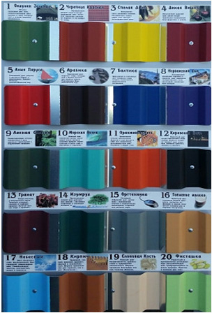
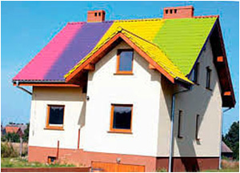
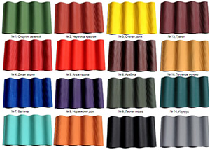
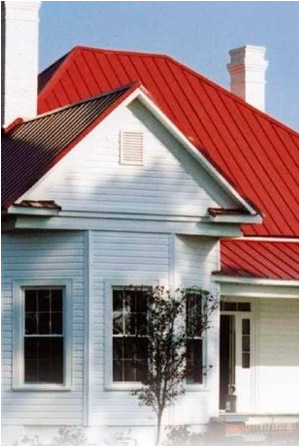

8(475) 233-717
elkin-dvor@mail.ru
- обладают повышенной водостойкостью
- долговечны (до 10 лет эксплуатации)
- не темнеют
- устойчивы к ультрафиолетовым лучам
- не боятся перепада температур от –75оС до +80оС
- весьма устойчивы не только к мытью моющими средствами, но и к атмосферным воздействиям (щелочи, сернистые и другие соединения и т.п.)
- после высыхания выдерживают обработку антисептическими составами.
Краски резиновые
- водоразбавляемая, колеруемая, полуматовая краска на акрилатной дисперсии
- обладает хорошей адгезией, высокой укрывистостью
- повышенная устойчивость к неблагоприятным условиям эксплуатации (сырость, перепады температур и т.д.); можно наносить в сырых помещениях
- после отвердения сохраняет свои свойства при температуре от -50°С до + 60°С.
- водонепроницаема, но позволяет поверхности "дышать"
- высокая износоустойчивость (мытьё)
- легко наносится, быстро сохнет
- не содержит токсичных и горючих растворителей!
- щелочестойкая, стойкая к мытью мыльным раствором
- безвредна, без запаха!
Свойства
- для первичной и ремонтной окраски оштукатуренных, бетонных, зашпатлеванных, кирпичных, оклеенных обоями, гипсокартонных, древесностружечных, древесноволокнистых поверхностей, дереву, черепице, асфальту, асбоцементу, и оцинкованной стали!
- для окраски поверхностей, окрашенных ранее алкидными, масляными и другими красками, подго• товленных согласно нижеуказанной инструкции
- не применять для окраски дверей, мебели, полов
Область применения:
Внешний вид



